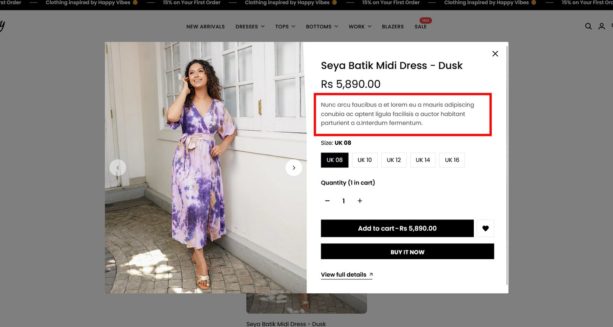
Issue 01
Product popup confusion
The quick-view popup shows placeholder-style description text, making product details feel incomplete and less professional.
A high-fidelity mobile e-commerce prototype focused on fixing trust issues, simplifying the checkout journey, and making product discovery feel clearer for fashion customers.
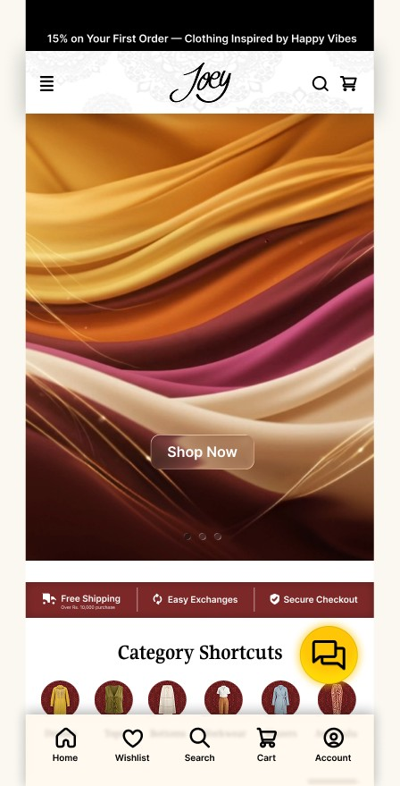
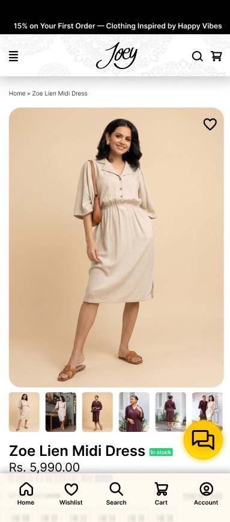
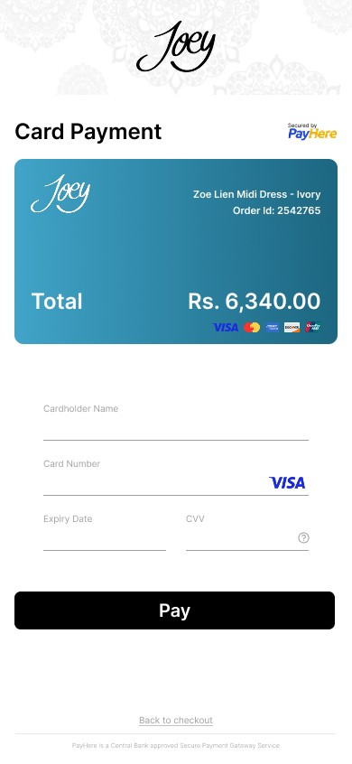
Joey Clothing already had the base structure of an online store: product listings, cart, policies, checkout, and customer account actions. That made it a realistic university redesign project because the goal was not to invent a new business, but to improve an existing shopping journey.
The main challenge was trust. Customers need to understand products, shipping, payment, order status, and support before they feel safe enough to complete a purchase on mobile.
Clear shipping, exchange, secure checkout, and policy information were moved into visible places.
Bottom navigation, category shortcuts, and direct cart actions make the user path shorter.
Product cards and detail pages show price, rating, availability, color, size, care, and return details.
Order tracking and chatbot support help users after payment, not only before purchase.
The official site screenshots were reviewed first. The biggest problems were not only visual; they affected confidence at important decision points such as account creation, policy reading, product details, and cart checkout.

The quick-view popup shows placeholder-style description text, making product details feel incomplete and less professional.
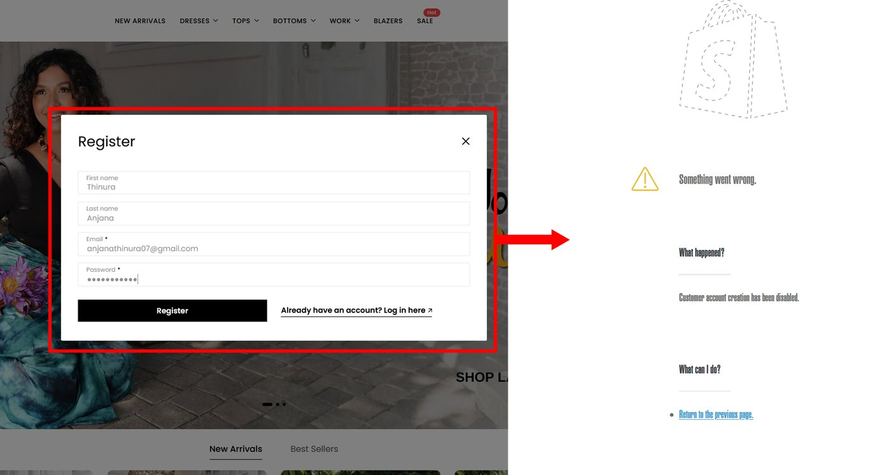
The account flow creates confusion because users meet errors after filling details, and the sign-in path feels unclear.
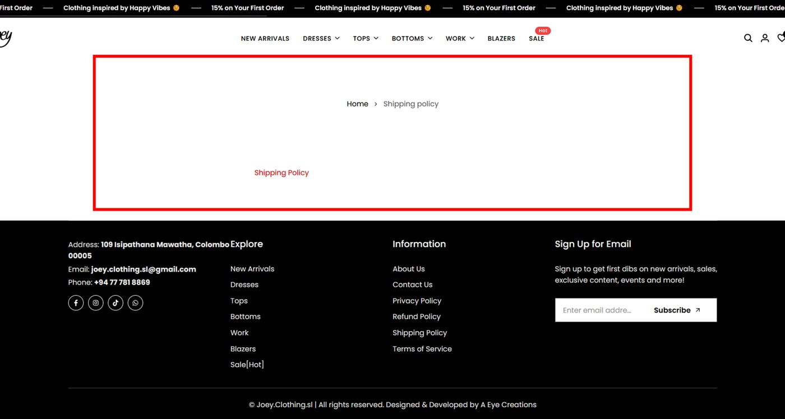
The policy area does not clearly explain delivery locations, charges, duties, failed delivery, returns, or refunds.
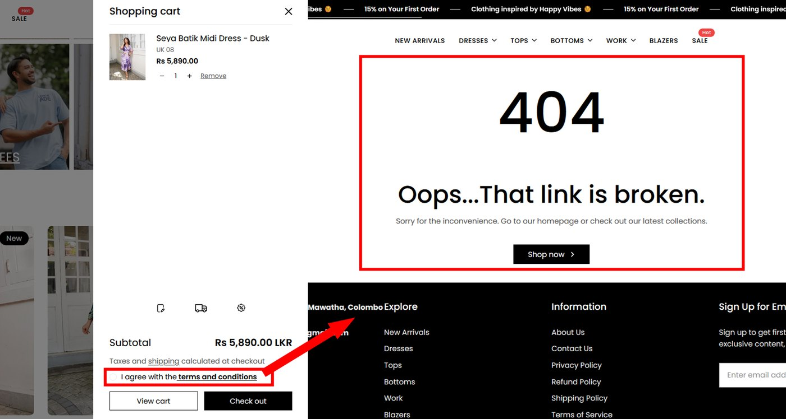
A terms-related link in the cart leads to a broken page, interrupting trust at the exact moment before checkout.
The redesign keeps Joey’s fashion identity but improves the shopping logic. Instead of hiding important information, the prototype brings key decisions closer to the user: category shortcuts on home, filters in listing, detailed information on products, one clear checkout path, and separate order tracking after purchase.
Home screen with hero image, trust strip, category shortcuts, and bottom navigation.
Product listing uses a two-column grid, filters, sort controls, product prices, and wishlist actions.
Product detail page adds images, color options, reviews, stock state, care, delivery, and return notes.
Checkout focuses on one card payment flow with clear amount, card details, and OTP confirmation.
After purchase, the user can confirm the order, track delivery status, or ask Jenny chatbot for support.
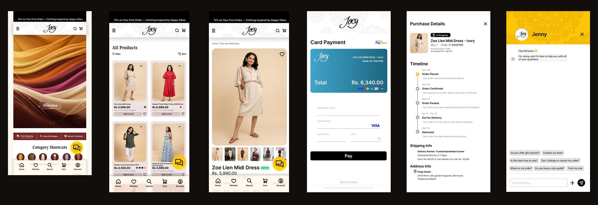
The screens are ordered so a user can understand the prototype naturally: enter the store, browse products, inspect a product, complete payment, confirm the order, track delivery, and get support.
Hero, trust strip, category shortcuts, bottom navigation, and chatbot entry.
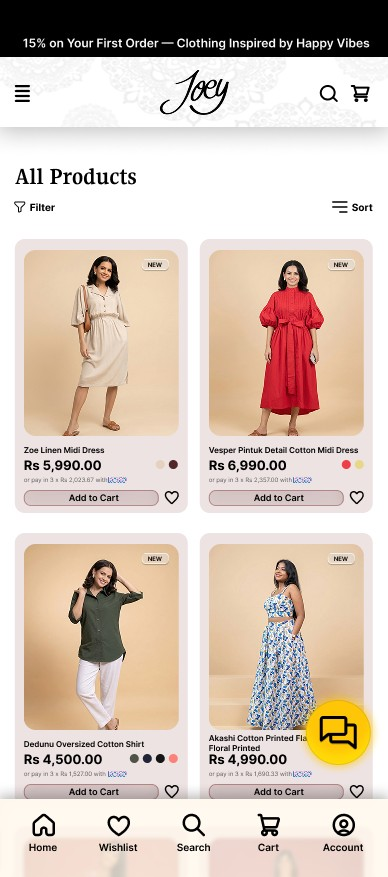
Two-column product grid with filter, sort, cart button, wishlist, and pricing.
Product images, rating, size, color, stock, material, care, delivery, and return information.
One direct card interface that shows order amount, card details, accepted cards, and pay action.
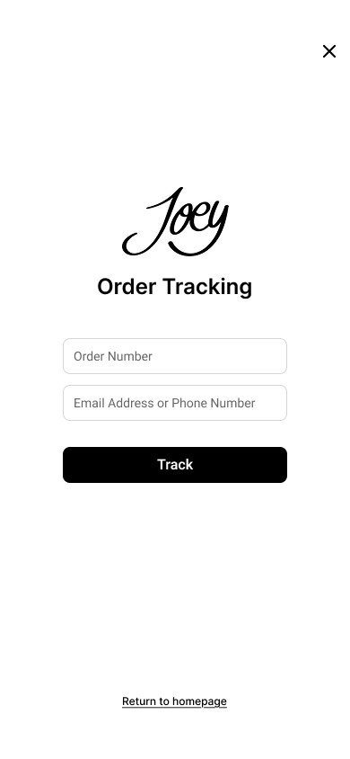
User can enter order number with email or phone number before viewing delivery status.
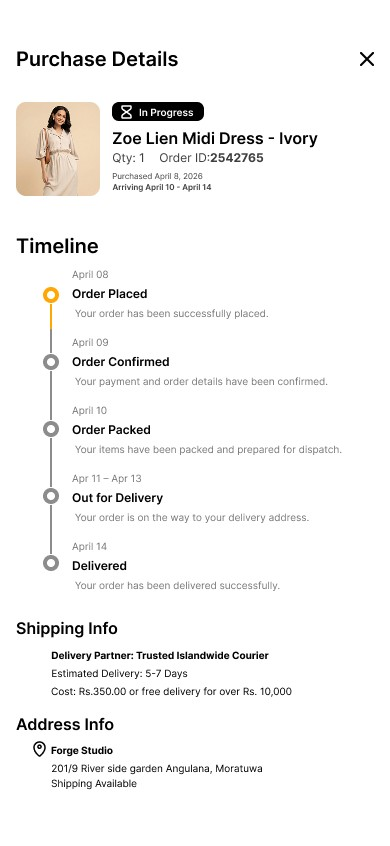
Shows order ID, timeline status, courier details, estimated delivery, and address information.
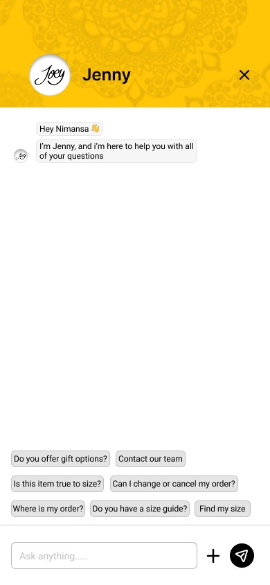
Frequently asked questions for size guide, order status, contact team, and cancellation support.
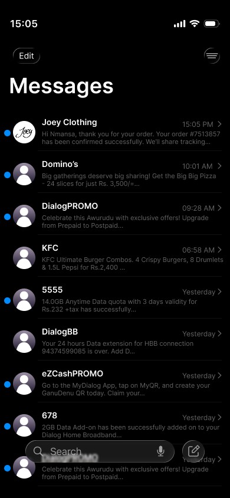
SMS-style confirmation and courier updates help users feel informed after purchase.
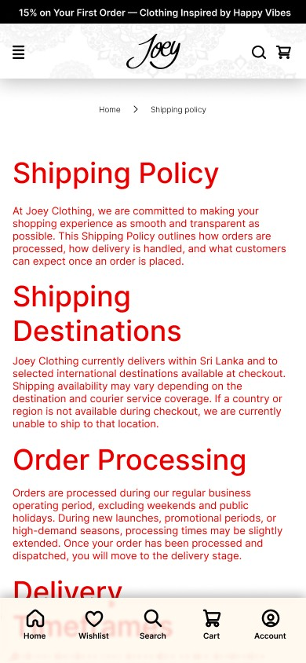
Clear shipping destinations, processing, delivery times, charges, duties, returns, and refunds.
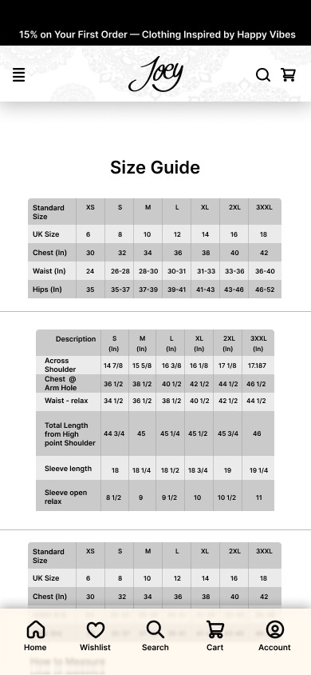
Measurement tables help reduce size confusion and support better buying decisions.
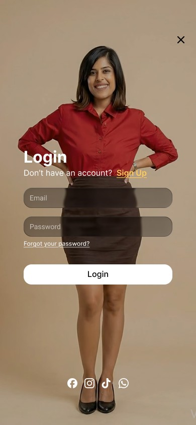
A cleaner single route for account access with stronger visual focus and fewer distractions.
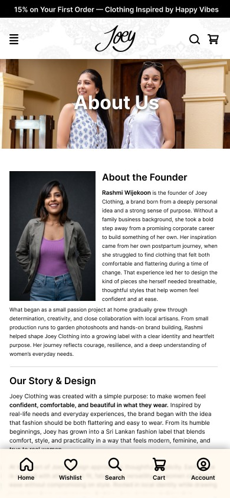
Brand story page that supports customer trust and gives the business a human identity.
Each UI change connects to a practical business problem: users need trust before payment, clarity before choosing a product, and support after the order is placed.
Free shipping, easy exchange, and secure checkout appear early on the home screen to reduce doubt.
Home, Wishlist, Search, Cart, and Account stay within thumb reach for mobile users.
Cards show name, price, installment note, color, rating, wishlist, and direct add-to-cart action.
Shipping and terms content are separated properly and written clearly to avoid broken trust links.
The payment section removes unnecessary alternatives and keeps the card process direct.
Jenny chatbot and order tracking support the user after purchase, not just during browsing.
The high-fidelity board connects the redesigned screens into one complete experience. It shows how the user moves from discovery to purchase, confirmation, delivery tracking, and customer support.
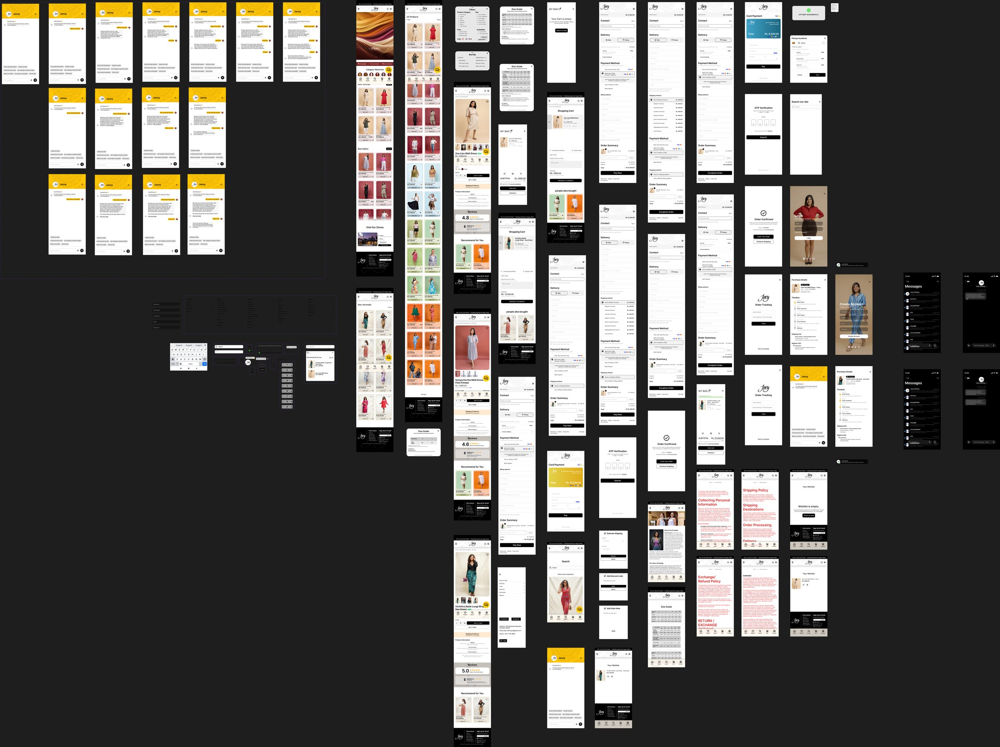
The redesign turns Joey Clothing’s mobile store into a clearer shopping system: easier to browse, safer to trust, smoother to pay, and stronger after the order is placed.